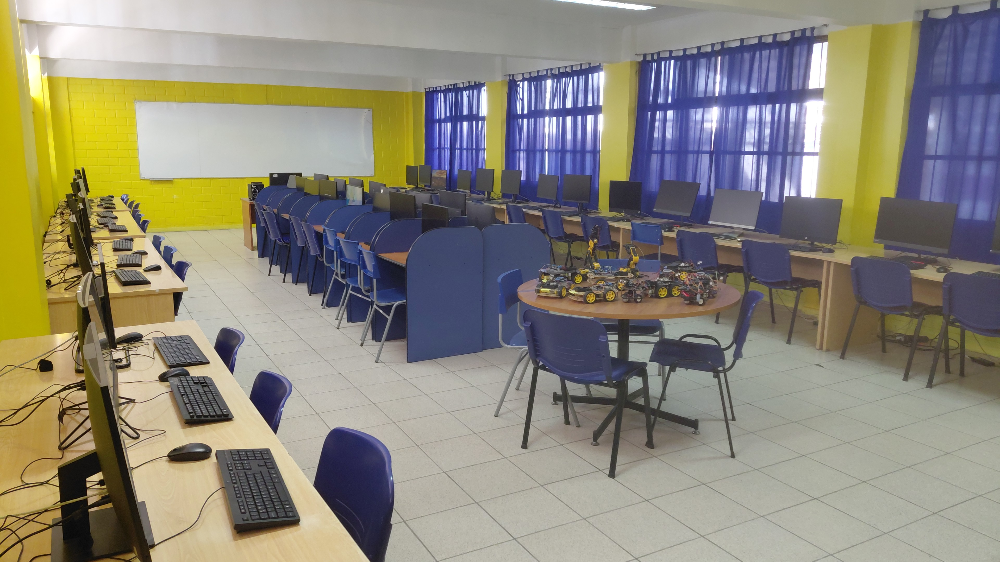
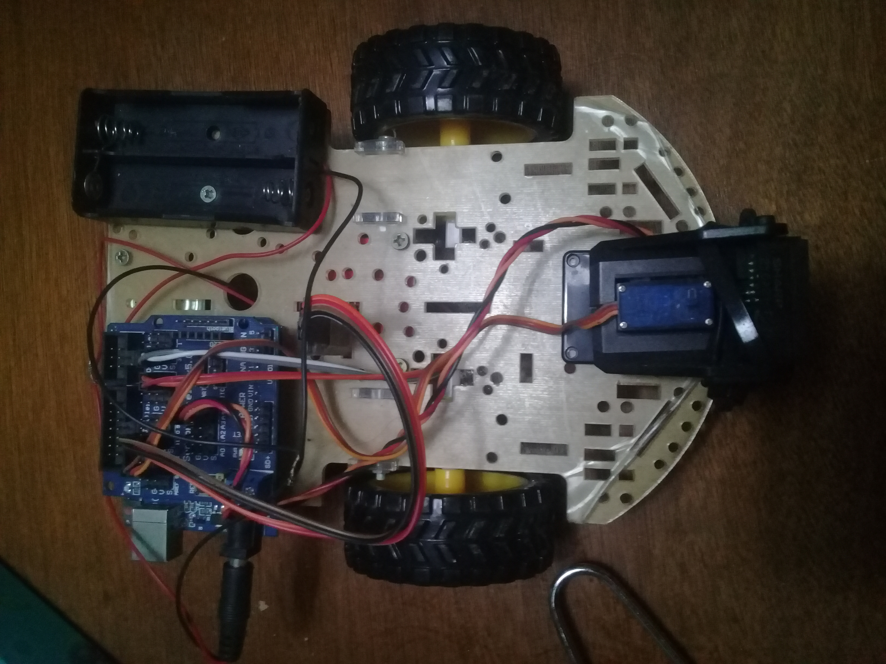

What this guide covers
The classroom context
This is a Computer Science and Robotics course at secondary school level. Students arrive with zero electronics experience — most have never held a soldering iron or connected a breadboard. By the end of the semester they have built, wired and programmed a working robot car. The photos in this guide are from that course: real students, real lab, real hardware.

The course uses Arduino Uno-compatible boards because they are cheap, well-documented and survive the abuse of being handled by thirty students per day. We don't use shields — students wire everything manually on a breadboard first, then solder the final version to a proto-board. That constraint is deliberate: if you only ever plug in a shield, you don't learn what's actually happening electrically.
The three sketches below are the actual files from the course, in the order students work through them. I've left the Spanish-language comments as-is — they were written for Spanish-speaking students and translating them after the fact would introduce errors that nobody ever ran and checked.
Stage 1 — single LED blink
Every student's first Arduino program. The goal isn't the LED — it's getting the IDE installed, finding the right COM port, and successfully uploading a sketch without panicking when the first attempt fails (and it always does, usually because of a driver issue on Windows).
Pin 9 was chosen instead of the built-in pin 13 LED so students are forced to wire an external LED with a resistor from the start. Pin 13's built-in LED is a crutch that hides the wiring step.
const int ledPIN = 9;
void setup() {
Serial.begin(9600); // iniciar puerto serie
pinMode(ledPIN, OUTPUT); // definir pin como salida
}
void loop() {
digitalWrite(ledPIN, HIGH); // poner el Pin en HIGH
delay(1000); // esperar un segundo
digitalWrite(ledPIN, LOW); // poner el Pin en LOW
delay(1000); // esperar un segundo
}The resistor value matters. We use 220 Ω with standard red 5 mm LEDs powered from Arduino's 5 V output. At that value the LED draws about 15 mA — well within the 40 mA per-pin limit of the Uno. Several students per class will try to connect the LED directly without a resistor; the LED glows briefly and then dies, which is actually a useful teaching moment about current limiting.
| Component | Value / spec | Beginner mistake |
|---|---|---|
| LED | Any 5 mm, any color | Connecting backward (anode/cathode reversed — LED just won't light) |
| Resistor | 220 Ω (red-red-brown) | Skipping it entirely — burns the LED |
| Pin | Digital 9 | Confusing digital pin 9 with analog A9 — they are different |
Stage 2 — six-LED sequence
The second exercise extends the first to six LEDs on pins 2 through 7, lighting each one in sequence with a 1-second pause. The point here is repetition and pattern: students see that the same digitalWrite / delay pattern repeats six times, which leads naturally to the discussion of loops and arrays in the next class.
int led_Dos = 2;
int led_Tres = 3;
int led_Cuatro = 4;
int led_Cinco = 5;
int led_Seis = 6;
int led_Siete = 7;
void setup() {
Serial.begin(9600);
pinMode(led_Dos, OUTPUT);
pinMode(led_Tres, OUTPUT);
pinMode(led_Cuatro, OUTPUT);
pinMode(led_Cinco, OUTPUT);
pinMode(led_Seis, OUTPUT);
pinMode(led_Siete, OUTPUT);
}
void loop() {
digitalWrite(led_Dos, HIGH); delay(1000); digitalWrite(led_Dos, LOW); delay(1000);
digitalWrite(led_Tres, HIGH); delay(1000); digitalWrite(led_Tres, LOW); delay(1000);
digitalWrite(led_Cuatro, HIGH); delay(1000); digitalWrite(led_Cuatro, LOW); delay(1000);
digitalWrite(led_Cinco, HIGH); delay(1000); digitalWrite(led_Cinco, LOW); delay(1000);
digitalWrite(led_Seis, HIGH); delay(1000); digitalWrite(led_Seis, LOW); delay(1000);
digitalWrite(led_Siete, HIGH); delay(1000); digitalWrite(led_Siete, LOW); delay(1000);
}The deliberate redundancy in this sketch — six nearly identical pairs of lines — is intentional pedagogy. Students copy it out, it works, and then you ask: "What would happen if we needed 50 LEDs?" The answer leads directly to for loops and arrays, which is the next topic. Starting with the verbose version makes the improvement obvious.
What the improved version looks like. Once students have seen loops, the exercise is to rewrite this sketch using int leds[] = {2,3,4,5,6,7}; and a for loop. The behavior is identical but the code drops from ~30 lines to ~10. That rewrite is more effective at teaching arrays than any explanation, because students can see the difference themselves.
Stage 3 — voice-controlled robot car
The final project. Students build a 4WD chassis, wire a motor driver (L298N-style board with IN1–IN4 control pins), connect an HC-05 Bluetooth module on pins 10/11 via SoftwareSerial, and add an HC-SR04 ultrasonic sensor for automatic obstacle avoidance. The phone app sends Spanish voice commands over Bluetooth: avanzar, detener, atrás, derecha, izquierda, and automático.

#include <SoftwareSerial.h>
#include <Servo.h>
SoftwareSerial BT(10, 11); // RX=10, TX=11
String voz;
int IN2 = 3;
int IN1 = 2;
int ENB = 1;
int BIN4 = 4;
int BIN3 = 5;
int BENB = 6;
const int Trigger = 6;
const int Echo = 7;
void setup() {
pinMode(ENB, OUTPUT);
pinMode(IN1, OUTPUT);
pinMode(IN2, OUTPUT);
pinMode(BENB, OUTPUT);
pinMode(BIN3, OUTPUT);
pinMode(BIN4, OUTPUT);
Serial.begin(9600);
pinMode(13, OUTPUT);
BT.begin(9600);
pinMode(Trigger, OUTPUT);
pinMode(Echo, INPUT);
digitalWrite(Trigger, LOW);
}
void loop() {
while (BT.available()) {
delay(10);
char c = (BT.read());
if (c == '#') break;
voz += c;
}
if (voz.length() > 0) {
Serial.println(voz);
if (voz == "avanzar") avanzar();
else if (voz == "detener") detener();
else if (voz == "atrás") atras();
else if (voz == "derecha") derecha();
else if (voz == "izquierda") izquierda();
else if (voz == "automático") modoAuto();
voz = "";
}
}
void modoAuto() {
while (true) {
digitalWrite(Trigger, HIGH);
delayMicroseconds(10);
digitalWrite(Trigger, LOW);
long t = pulseIn(Echo, HIGH);
long d = t / 59;
Serial.print("Distancia: "); Serial.print(d); Serial.println("cm");
delay(100);
if (d > 100) avanzarAUT();
else detener();
// Exit auto mode if a new command arrives
if (BT.available()) { voz = ""; break; }
}
}
void avanzar() { digitalWrite(13,HIGH); digitalWrite(IN1,HIGH); digitalWrite(IN2,LOW);
digitalWrite(BIN3,HIGH); digitalWrite(BIN4,LOW); }
void detener() { digitalWrite(13,LOW); analogWrite(IN1,0); analogWrite(BIN3,0); }
void atras() { digitalWrite(IN1,LOW); digitalWrite(IN2,HIGH);
digitalWrite(BIN3,LOW); digitalWrite(BIN4,HIGH); }
void derecha() { digitalWrite(IN1,LOW); digitalWrite(IN2,HIGH); }
void izquierda() { digitalWrite(IN1,HIGH); digitalWrite(IN2,LOW); }
void avanzarAUT() { digitalWrite(13,HIGH); digitalWrite(IN1,HIGH); digitalWrite(IN2,LOW);
digitalWrite(BIN3,HIGH); digitalWrite(BIN4,LOW); }Note: the sketch above has one fix compared to the original student file — the modoAuto() function replaces a recursive loop() call that was in the original. The recursive version worked in short demos but would eventually overflow the stack in a long run. In the classroom we discovered this during a 10-minute continuous autonomy test where two cars reset unexpectedly. The fix is to use a while(true) loop with a Bluetooth check for exit.
The pin-conflict problem students always hit
In the voice-control sketch, pins 6 and 7 are used for the HC-SR04 Trigger and Echo. But pin 6 is also defined as BENB (the motor driver enable for the B channel). In the original student file both were assigned without noticing the collision — it compiled and ran because the two uses didn't overlap in time during testing, but it's a latent bug that would cause unpredictable motor behavior if the autonomous mode ran while the motor enable line was being toggled elsewhere.
This is the most common class-wide bug we see every semester: students assign pins by copying example code from two different sources without checking for conflicts. The fix is simple — give each function its own pin — but finding it requires reading the whole sketch top to bottom, which students resist. We now require a pin-assignment table as part of every project submission:
| Pin | Role | Direction |
|---|---|---|
| 2 | IN1 — motor A direction | OUTPUT |
| 3 | IN2 — motor A direction | OUTPUT |
| 4 | BIN4 — motor B direction | OUTPUT |
| 5 | BIN3 — motor B direction | OUTPUT |
| 6 | HC-SR04 Trigger (conflicts with BENB in original) | OUTPUT |
| 7 | HC-SR04 Echo | INPUT |
| 9 | LED pin (stage 1 exercise) | OUTPUT |
| 10 | SoftwareSerial RX (Bluetooth) | INPUT |
| 11 | SoftwareSerial TX (Bluetooth) | OUTPUT |
| 13 | Onboard LED (status) | OUTPUT |
Requiring this table before any code is written has cut pin-conflict bugs by roughly half in subsequent semesters.
Frequently asked questions
What Bluetooth app sends the voice commands?
Any Android app that supports voice-to-text over Bluetooth serial and appends a # terminator character works. We use a free app called "Arduino Bluetooth Voice Control" available on the Play Store — it matches the # delimiter the sketch uses to know when a command is complete.
Why does the car only respond to Spanish commands?
Because that's what we teach in — the class is in Spanish, the students set up the voice recognition in Spanish, and the strings in the sketch match. Changing the commands is a one-line edit per command: replace "avanzar" with "forward" etc. The logic is identical.
Why 100 cm as the obstacle threshold in autonomous mode?
The classroom floor has no tight corners and the cars run fast enough that 30 cm (the threshold in our earlier obstacle-avoidance project) wasn't giving enough stopping distance. 100 cm works for the classroom environment. In a tighter space you'd raise it further; in a large open area you might lower it.
Can this run on an Arduino Nano instead of Uno?
Yes — the pin assignments and libraries are identical. The Nano is physically smaller which helps on the chassis, but its USB connector is mini-USB (or micro on some clones) instead of the Uno's standard-B, so you'll need a different cable for programming. We use Unos in class because the connectors are more robust for daily handling.
What is the battery setup?
The car in the photo uses a 4×AA battery holder (6 V nominal) powering the motors through the driver board, with the Arduino powered separately via USB during testing and from a small 9 V block battery in the field. Running both from the same source causes voltage dips when the motors start that can reset the Arduino — a mistake almost every student makes at least once.
All photos in this article were taken in my classroom. The sketches are the actual files used in the course, lightly cleaned for readability. No sponsored content or paid placements.
Continue learning
See the first project in this series: Obstacle-avoiding robot car with Arduino and an ultrasonic sensor — a single-sensor build with the code and wiring documented the same way.